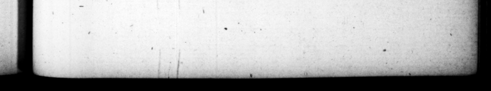

rr SWEETEST e r TCTERrtT EEC tora vit ed icto, ju tradete arma. A atqʒ viginti, quorum libellos | — cupide recepit : Augu diltulit : cæſaris in perpetuum reculavit. 1. ferred aſſuming that of Auguſtus, and for ever refuſea' that of Ceſar, 9. Ac ſubinde ode Galbe annuntiata, compoſitis Germanicis rebus, part itus eſt co. pias, quas adverſus Othonem præmitteret 5 quaſque ipſe tæmi perduceret. O agmini lerum evenit auſpicium; ſiquidem à parte dextra repence aquila advolavit : luſtratiſque ſignis, ingreſſos viam fenſim anteceſſit. At contra ipſo movence, ſtatuæ equeltres cum plurifariam ei ponerentur, fract is repente cruribus pariter corruerunt: & laurea, quam religioſiflime circumdederat, in proflughtem excidit. Mox Vienne pro Tribunall jura reddenti, gallinaceus ſupra humerum, ac deinde in capite adſti it. Quibus oſtentis, par rei pundic exitus: nam ,contirmatum per legatos ſuos imperium, per ſe retmere non potuit. 10. De Bebriacenſi victoria, & Othonis exitu, cum adhuc in Gallia eſſet, audlit; nihilque cunctatus, quidquid prætoxlanarumcohortium tit, ut peſſimi Dean exaneas tribunis entum autem Othoni datos invenerat, exroſcentium præmia ob edi tam in cede Galbz operam, conquiri, & ſupplicio affici imperavit : egregie proxſus, atque magni ambpriacipis ſpem oſtenderet, niſi cetera magis ex natura & prigre vita ſua, quam ex Imperii majeſtate geſſiſſet. amque iti nere inchoato, per medias civitates ritn trium antium vectus eſt: perque umina delicatiſſimis navi Sils, & variarum coronarum tice, & ut ſum- * Een he very forward iy gccipted the cg of 8 fre kim by the wn” animous conſent of both , but F 9. Sion after news arriving 'of the death of Galbs, after be bad Tetled his affairs in G:rmany he divided bis troop; in two parts, in order to feud on: of them before him, ag un . and ro follow after with the other him elf. . The part be ſem: before had” a lucky omen ; fi" en a ſudden an cagle came flying up to them en be rigbe, and having moved round the ftandard,, went edſfrly b:fore them in their march, But on he ot ber hand, when he begun to move for ward, the flatues m bor ſeback, which were erefted for bim in ſeveral p acer, fell down” all 22 on a ſudden with their 12 ke ; ani the lawel-crown, which he had fir luck's ſake pu: on, fell of bi, beau into 4 river, Soon fr at Fiems; as be was upon the bmnih trying caſes," 4 cock perched” apm ut "\ſbyalder, a aſt-rwards upon hiv head. And "the Jue was anſv-rable to theſe mens, for he was "no; able 10 keep tb emprre which hd been acgure for bim by his leuvetenante. . i 4 547 Þ 10. Ne beard of "thy victory at Beb ia cum, and the death of Otho, whilſt he was yet in Gaul, and without de1146s, ® at all upon the matter, by one proclamation diſbanded all the pratoriaw battalions, as having given 4 very ill precedent to the armys by the murder of Galba, and commanded them to deliver ub their arms to his tribiunes. A hundred and twenty, under whoſe hands he had found petitions preſented to Otho for rewards in conſederation of ' their ſervice in the Elling of Galba, he moreover ordered to be ſourhe out, "and uniſhed, Al! which was excellently well and nobly done, and ſ as to give hopes of his proving 'a fine vrince; had | he not managed bn: other affairs in a way more agreeable to his n nature and his former manner of life, than the imperial dignity. For after he begun bis march, he rid through every city he came at, in à tri ant manner, and ſailed down the rivers in his
